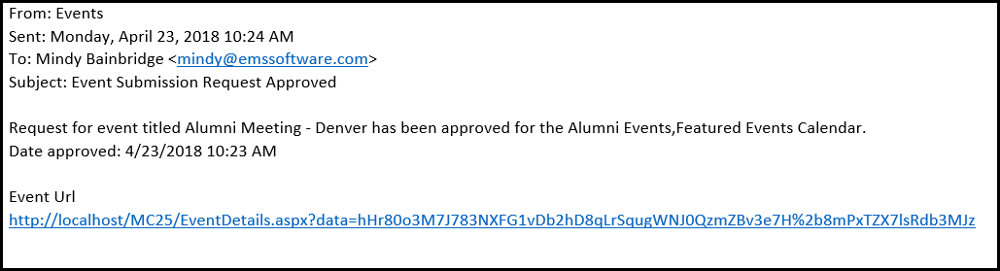

Select the pending events that you are approving. To select all pending events on the currently opened page for approval in a single step, select the column heading, Title. If you have multiple pages of events to approve, you must repeat this entire process on each page.

Manage Events Page
Click OK in the message. The events are approved and are removed from the Pending Events list. For each approved event, an email is automatically generated and sent to the event requestor informing them that the Calendar Manager has approved their request.

Example of Approved Event Request Email